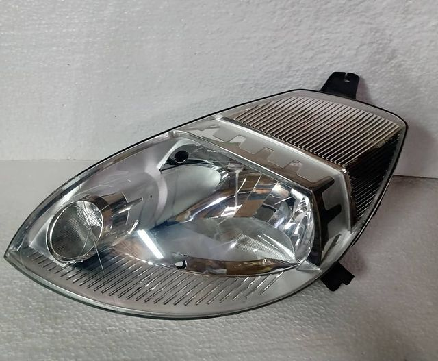

Antes
Farol todo amarelado, afetando a eficiência de iluminação, e, obviamente, a estética.
Quer que seu farol vá disso:
Pra isso?

Depois
Com o amarelado removido, o farol fica bonito novamente e sua eficiência de iluminação está de volta ao normal
Aqui na RTF temos um método de polimento único, removendo totalmente* o amarelado externo do seu farol e o deixando com cara renovada, levantando o visual do carro! Para aproveitamento melhor do serviço, retiramos o seu parachoque(exceto em alguns casos, como o HB20) e o polimento é realizado com o farol em mãos, fora do carro. Mas não se preocupe! Todas as lâmpadas e ligações são testadas antes e depois do procedimento.